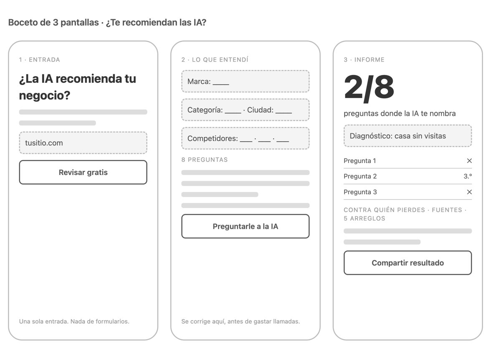
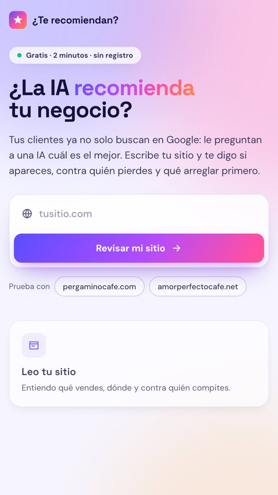

Construye tu propia herramienta que mide si la IA te recomienda
Esta semana la construí en público. Aquí está todo, fase por fase, con los prompts para copiar y pegar, para que hagas la tuya. No necesitas saber programar: necesitas saber qué pedirle a la IA.
00
Por qué vale la pena medirlo
Tu cliente ya no siempre abre diez pestañas en Google. Le pregunta a una IA «¿cuál es el mejor…?» y la IA le contesta con tres nombres. Si no estás en esos tres, para ese cliente no existes, y ningún tablero de marketing te lo dice.
Lo que encontré al construirla: la IA no recomienda con tu sitio; recomienda con lo que otros dicen de ti. Reseñas, guías de la ciudad, Instagram, foros. Por eso puedes estar primero en Google y no salir en la respuesta.
01
El brief, en una página
Antes de pedirle código a la IA, escribe qué va a hacer la herramienta. Si no cabe en una página, todavía no está claro. Esta página es la que vas a releer cada vez que dudes.
La plantilla
## Problema Qué le pasa al cliente hoy, en dos frases. ## Objetivo medible Qué va a saber la persona al terminar, con un número. Ej.: en cuántas de 8 preguntas de compra la IA nombra su marca. ## Cómo sé que la herramienta funciona Ej.: termina en menos de 2 minutos; acierta la marca en 8 de 10 sitios; cuesta 0. ## Qué NO hace ✕ No promete subir posiciones. ✕ No pide correo ni datos personales. ## Entrada única La dirección del sitio. Todo lo demás se deduce. ## Método Los pasos, en lenguaje de cliente.
El prompt
Quiero construir una herramienta web gratuita que mida si la IA recomienda un negocio cuando un cliente le pregunta por lo que vende. Antes de escribir código, ayúdame a escribir el brief en una sola página con estas partes: problema, objetivo medible, cómo sé que la herramienta funciona, qué NO hace, entrada única y método. La entrada debe ser solo la dirección del sitio. Si te falta algo, hazme máximo 3 preguntas. Guárdalo en docs/00-BRIEF.md.
02
La estructura del proyecto
Tres carpetas, cada una con su trabajo, y un archivo que le dice a la IA qué leer. Así el agente no relee todo el proyecto en cada tarea: gasta menos tiempo y menos plata, y se equivoca menos.
▸ docs/ para decidir 00-BRIEF.md 01-PLAN.md 02-ARQUITECTURA.md 03-SEGURIDAD.md 04-TOKENS.md 05-PUESTA-AL-AIRE.md ▸ app/ para construir (el código) src/ public/ test/ CLAUDE.md el mapa para la IA
El mapa para la IA
# Mi herramienta · contexto para el agente Lee solo lo que necesites: | Si vas a… | Lee | |---------------------------------|---------------------------| | entender qué es y qué no | docs/00-BRIEF.md | | saber en qué fase va | docs/01-PLAN.md | | tocar el código | docs/02-ARQUITECTURA.md | | tocar llaves, límites o la URL | docs/03-SEGURIDAD.md | | cambiar las preguntas a la IA | docs/04-TOKENS.md | | publicar | docs/05-PUESTA-AL-AIRE.md | ## Reglas que no se rompen - La llave de la IA nunca va en el código ni en la página. - Lo que se puede decidir con reglas no se le pregunta a la IA. - Publicar lo decido yo.
El prompt
Lee docs/00-BRIEF.md. Crea esta estructura: docs/ para las decisiones, app/ para el código (src, public, test) y un CLAUDE.md en la raíz con una tabla "Si vas a… / Lee" que apunte a cada documento. Escribe 01-PLAN.md con fases cortas, donde cada fase termine en algo que se pueda ver y diga cómo sé que terminó. Escribe también 02-ARQUITECTURA, 03-SEGURIDAD y 04-TOKENS, de una página cada uno. Todavía no escribas código.
03
Trabajar con la IA sin gastar de más
La regla que más plata ahorra: lo que se puede decidir con reglas no se le pregunta a la IA. La IA es buena leyendo y redactando; las cuentas y los diagnósticos los hacen reglas fijas, que son gratis, siempre dan lo mismo y se pueden probar.
10 llamadas por revisión. Mi primera versión, para proyectos, hacía entre 30 y 90.
Cinco trucos para gastar menos
- Resume antes de mandar. Del sitio solo van el título, la descripción, los subtítulos y 1.500 caracteres de texto: de unos 30.000 tokens a unos 800.
- Agrupa. Las 8 respuestas se leen en una sola llamada, no en 8.
- Pide formato fijo. Respuesta en JSON con un esquema: no hay que adivinar qué dijo.
- Guarda lo que ya preguntaste. Si alguien revisa el mismo sitio en 7 días, no se gasta nada.
- Que no piense de más. En Gemini, el pensamiento en nivel bajo para tareas de leer y extraer.
Skills: un manual por trabajo
Una skill es un manual que la IA sigue al pie de la letra. Usé tres: una con el método para medir visibilidad en IA (las preguntas, los cuatro diagnósticos), una de diseño para las pantallas y una de revisión de seguridad antes de publicar. Si tu agente no las tiene, el banco de preguntas y las reglas de esta guía son tu primera skill.
Revisa el plan y dime cuántas llamadas a la IA hace cada revisión. Propón cómo bajarlas sin perder calidad: qué pasar a reglas fijas, qué agrupar en una sola llamada, qué resumir antes de mandar y qué guardar en caché. Escribe la decisión en docs/04-TOKENS.md con el antes y el después.
04
Boceto y pantallas
Primero un boceto en gris, sin colores ni código real. Tres pantallas: la entrada, lo que la herramienta entendió (para corregir antes de gastar llamadas) y el informe. Si el boceto no se entiende, el diseño tampoco lo va a arreglar.

Haz un boceto en HTML, en gris y sin colores, de 3 pantallas de celular una al lado de la otra: 1) entrada con un solo campo para el sitio y un botón; 2) "lo que entendí": marca, categoría, ciudad y competidores editables, y las 8 preguntas; 3) informe: un número grande con cuántas preguntas te nombran, el diagnóstico, la tabla por pregunta, contra quién pierdes, de dónde lo saca la IA y 5 arreglos. Guárdalo en docs/mockups/boceto.html.
Después, el diseño de verdad. Pídele móvil primero, colores vivos y movimiento con criterio: que los botones se encojan un poco al presionarlos, que nada tarde más de 300 milisegundos y que todo se pueda apagar si la persona tiene activado «reducir movimiento».

Con el boceto como guía, construye las 3 pantallas reales en app/public con HTML, CSS y JavaScript, sin librerías. Móvil primero, colores vivos (un degradado de violeta a coral para lo importante), letras Space Grotesk y DM Sans. Movimiento solo en transform y opacity, curvas de salida rápida, botones que se encogen a 0,97 al presionarlos, efectos de pasar el mouse solo en computador y todo apagable con prefers-reduced-motion. Todo texto que venga de la IA o del sitio se pinta como texto, nunca como HTML.
05
El servidor: preguntarle a la IA como un cliente
Usé Cloudflare Workers, que es gratis y guarda la llave como secreto, y la API de Gemini con búsqueda de Google, que responde con fuentes. El servidor tiene dos pasos:
Las 8 preguntas, en 4 intenciones
| Intención | Plantilla |
|---|---|
| Descubrir | ¿Cuál es el mejor [lo que vendes] en [ciudad]? Recomiéndame 3 opciones de [lo que vendes] en [ciudad]. |
| Comparar | ¿Qué es mejor, [competidor 1] o [competidor 2]? ¿Hay una opción mejor que ambas? ¿Qué alternativas a [competidor 1] hay en [ciudad]? |
| Decidir | ¿Qué [lo que vendes] en [ciudad] tiene las mejores opiniones? Voy a escoger un [lo que vendes] en [ciudad]. ¿Cuál me recomiendas y por qué? |
| Problema | Dos preguntas con una necesidad concreta que tu negocio resuelve, escritas por la IA a partir de tu sitio. |
Ninguna pregunta nombra tu marca. Si la nombrara, la IA la repetiría y la medición no serviría.
El diagnóstico: cuatro casos
Se cruza lo que dice la IA (en cuántas preguntas te nombra; alto es 3 de 8 o más) con los cimientos de tu sitio (6 revisiones: datos estructurados, perfiles enlazados, descripción, fechas, preguntas frecuentes y acceso para los rastreadores de IA; alto es 50 de 100 o más).
Construye el servidor en app/src como un Cloudflare Worker con dos rutas. /api/perfil: recibe la URL, descarga el sitio (máximo 8 segundos y 400 KB), resume título, descripción, h1, h2 y 1.500 caracteres, y en UNA llamada a Gemini con salida JSON deduce marca, categoría, ciudad, 3 competidores y 2 preguntas de "problema". /api/auditar: arma 8 preguntas (6 de plantilla y las 2 de problema), las hace a Gemini con búsqueda de Google de a 3 en paralelo, lee las 8 respuestas en UNA llamada que devuelve las marcas nombradas en orden, y arma el informe con reglas en un archivo aparte (analisis.js): cuota, puesto medio, fuentes más citadas, contra quién pierdes, diagnóstico y 5 arreglos. Agrega un modo prueba con respuestas fijas para probar todo sin gastar, y pruebas automáticas de las reglas.
06
Seguridad: lo que nadie te cuenta
Una herramienta gratis y abierta es un blanco. Estos son los puntos que revisé antes de publicar:
Revisa la seguridad antes de publicar y arregla lo que encuentres: ¿la llave puede llegar al navegador o al repositorio? ¿la URL de entrada puede apuntar a una IP o a una dirección interna, también después de una redirección? ¿alguien puede mandar sus propias preguntas y usar la herramienta como una IA gratis con mi cuota? ¿hay límite por persona y por día? ¿algún error le muestra a la persona detalles técnicos o en inglés? Deja una prueba automática por cada arreglo y escribe todo en docs/03-SEGURIDAD.md.
07
En línea, gratis
Cloudflare Workers sirve las pantallas y el servidor en el mismo lugar, en el plan gratis. Estos pasos los haces tú, porque piden iniciar sesión y crear llaves:
# 1. Inicia sesión (abre el navegador) npx wrangler login # 2. La caché y los secretos npx wrangler kv namespace create CACHE npx wrangler secret put GEMINI_API_KEY npx wrangler secret put TURNSTILE_SECRET npx wrangler secret put FIRMA_SECRETO # 3. Pruebas y publicar npm test && npx wrangler deploy # Si algo sale mal, vuelve a la versión anterior npx wrangler rollback
Prepara la puesta en línea en Cloudflare Workers: un script desplegar.sh que se niegue a publicar si falta algún secreto, si el modo prueba sigue activo o si fallan las pruebas. Escribe en docs/05-PUESTA-AL-AIRE.md los pasos que tengo que hacer yo (iniciar sesión, crear la llave de Gemini en un proyecto sin facturación, crear el widget de Turnstile) y cómo volver atrás si algo falla.
08
Lo que salió mal (y la regla que quedó)
09
Mientras tanto, hazlo a mano: 30 preguntas
Si hoy no vas a construir nada, haz la prueba a mano en ChatGPT o en Gemini. Cambia lo que está entre corchetes, haz cada pregunta en una conversación nueva y anota el resultado.
## Descubrir (8) 1. ¿Cuál es el mejor [lo que vendes] en [ciudad]? 2. Recomiéndame 3 opciones de [lo que vendes] en [ciudad]. 3. ¿Dónde consigo un buen [lo que vendes] cerca de [barrio o zona]? 4. ¿Qué [lo que vendes] en [ciudad] recomiendan los que saben? 5. Busco [lo que vendes] en [ciudad] para [un uso concreto]. ¿Qué me sugieres? 6. ¿Cuáles son los [lo que vendes] más conocidos de [ciudad]? 7. ¿Qué [lo que vendes] nuevo vale la pena en [ciudad]? 8. Dame una lista de [lo que vendes] en [ciudad] con precios. ## Comparar (7) 9. ¿Qué es mejor, [competidor 1] o [competidor 2]? 10. ¿Qué alternativas a [competidor 1] hay en [ciudad]? 11. Compara los 3 [lo que vendes] más recomendados de [ciudad]. 12. ¿[Competidor 1] vale lo que cuesta o hay algo mejor? 13. ¿Cuál es más barato y bueno: [competidor 1], [competidor 2] u otro? 14. ¿Qué diferencia hay entre los [lo que vendes] de [ciudad]? 15. Si no me gustó [competidor 1], ¿a dónde voy? ## Decidir (8) 16. ¿Qué [lo que vendes] en [ciudad] tiene las mejores opiniones? 17. Voy a escoger un [lo que vendes] en [ciudad]. ¿Cuál me recomiendas y por qué? 18. ¿En cuál [lo que vendes] de [ciudad] puedo confiar? 19. ¿Qué [lo que vendes] de [ciudad] tiene mejor servicio? 20. ¿Cuál [lo que vendes] tiene mejor relación calidad y precio en [ciudad]? 21. ¿Qué [lo que vendes] de [ciudad] me recomiendas para regalar? 22. ¿Cuál es el [lo que vendes] favorito de la gente en [ciudad]? 23. Si solo pudiera ir a un [lo que vendes] en [ciudad], ¿cuál? ## Problema (7) 24. Necesito [la necesidad que resuelves]. ¿Quién lo hace bien en [ciudad]? 25. Tengo [un problema concreto]. ¿A quién acudo? 26. ¿Cómo resuelvo [el problema] sin gastar mucho en [ciudad]? 27. ¿Quién me puede ayudar con [la necesidad] hoy mismo en [ciudad]? 28. Busco a alguien de confianza para [la necesidad]. ¿Opciones? 29. ¿Qué hago si [el problema]? ¿Algún negocio que lo resuelva? 30. ¿Dónde encuentro [algo que solo tú ofreces] en [ciudad]?
Anota así
| # | ¿Te nombra? | Puesto | A quién nombra | Fuentes que cita |
|---|---|---|---|---|
| 1 | Sí / No | 1.º, 2.º… | Marca A, Marca B… | tripadvisor, instagram… |
Cómo leerlo
- Tu cuota: en cuántas de las 30 te nombra. 11 o más es un resultado alto.
- Contra quién pierdes: la marca que más aparece cuando tú no apareces.
- De dónde lo saca: los sitios que más se repiten en las fuentes. Ahí tienes que estar.
Los 5 arreglos, en este orden
- Aparece donde la IA lee: ficha completa y reseñas recientes en los sitios que cita.
- Pide reseñas con detalle: qué compraron y por qué volverían.
- Publica una comparación honesta contra la marca que te gana: en qué eres mejor y en qué no.
- Responde las preguntas de tus clientes en una página de preguntas frecuentes.
- Dale a tu sitio con qué ser citado: datos de tu negocio bien marcados, fechas y algo que nadie más tenga.
Vuelve a medir cada 3 meses: las respuestas de la IA cambian.
¿Conoces a alguien a quien la IA no recomienda?
Pásale esta guía. Y si construyes la tuya, cuéntame cómo te fue en @jonathanrod.ia o en LinkedIn. Cada semana construyo una herramienta nueva, en público.